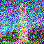

I first experimented by running an existing trained stable diffusion model, DeepFloyd IF. Given a test prompt as input and using a random seed (I used $180$), the model accurately outputs an image that depicts the description. The images start off as white noise, and each step, the objects take form. As num_inference_steps increases, the images become more complex and less noisy.
|
num_inference_steps = 1 |
 num_inference_steps = 5 |
 num_inference_steps = 10 |
|
num_inference_steps = 20 |
Part 1.1 Forward process
Diffusion involves taking in a noisy image and denoising it to produce a clean image. This process is difficult, but the reverse–adding noise to a clean image–is very simple. Therefore, the first part of this project is implementing the forward process using the following equation:
$$x_t = \sqrt{\bar{\alpha}_t} x0 + \sqrt{1 - \bar{\alpha}_t} \cdot \epsilon \quad \text{where} \quad \epsilon \sim N(0, 1)$$- $x_0 =$ clean image
- $x_t =$ noisy image at timestep $t$
- $\bar{\alpha}_t =$ noise coefficient
- $\epsilon =$ Gaussian noise
Given the original image $x_0$ and timestep $t \in [0, T]$, the function forward noises the image. The image at $t = 0$ is the original image, while at $t = T$, the image is pure noise. Thus, $\bar{\alpha}_t$ is close to 1 for small $t$ and close to $0$ for large $t$.
 campanile.png |
||
|
t = 250 |
 t = 250 |
t = 750 |
Part 1.2 Classical Denoising
In order to recover the original image, one option is to apply Gaussian blur filtering to remove noise. This was done using the function torchvision.transforms.functional.gaussian_blur
 blurred t = 250 |
blurred t = 500 |
 blurred t = 750 |
Part 1.3 One-Step Denoising
To achieve a better result, a pretrained diffusion model is used. Given a noisy image im_noisy and timestep $t$, the UNet estimates the amount of noise in the image. Then, this noise is removed from im_noisy to produce the estimated clean image.
$$x_t = \sqrt{\bar{\alpha}_t} \cdot x_0 + \sqrt{1 - \bar{\alpha}_t} \cdot \epsilon \quad \text{where} \quad \epsilon \sim N(0, 1)$$ $$x_t - \sqrt{1 - \bar{\alpha}_t} \cdot \epsilon = \sqrt{\bar{\alpha}_t} \cdot x_0$$ $$x_0 = \frac{x_t - \sqrt{1 - \bar{\alpha}_t} \cdot \epsilon}{ \sqrt{\bar{\alpha}_t} }$$Compared to using Gaussian blur filtering, the result is improved. At $t=0$, the output is the most accurate, and the quality decreases with higher $t$, producing a more distorted campanile.
 after one-step denoising t = 250 |
after one-step denoising t = 500 |
 after one-step denoising t = 750 |
Part 1.4 Iterative Denoising
Because one-step denoising performs worse with added noise, this problem can be addressed by iteratively denoising. For each time step $t$, the function iterative_denoise uses a UNet to estimate the amount of noise, and then denoises the image $x_t$ to generate the less noisy image $x_{t-1}$ at the previous timestep $t-1$.
$$x_{t'} = \frac{\sqrt{\bar{\alpha}_{t'}}}{1 - \bar{\alpha}_t} x_0 + \frac{\sqrt{\bar{\alpha}_t} (1 - \alpha{t'})}{1 - \bar{\alpha}_t} x_t + v_{\sigma}$$- $x_t = $ image at timestep $t$
- $x_{t'} =$ noisy image at timestep $t'$ where $t' < t$ (less noisy)
- $\bar{\alpha}_t =$ noise coefficient
- $\alpha_t = \bar{\alpha}_t / \bar{\alpha}_{t'}$
- $\beta_t = 1 - \alpha_t$
- $x_0 = $ current estimate of the clean image (generated from one-step denoising)
- $v_{\sigma} =$ random noise calculated by the function add_variance
While this is the general idea, it is not necessary to denoise at each timestep from $T$ to $0$. To skip steps, a list of timesteps strided_timesteps is used which accelerates the process. This list is created starting at $990$ with a stride of $30$, eventually reaching $0$.
|
noisy campanile.png |
||
|
t = 690 |

t = 540 |
t = 390 |
|
t = 240 |
t = 90 |
|
after iterative denoising |
 after one-step denoising |
after Gaussian blur filtering |